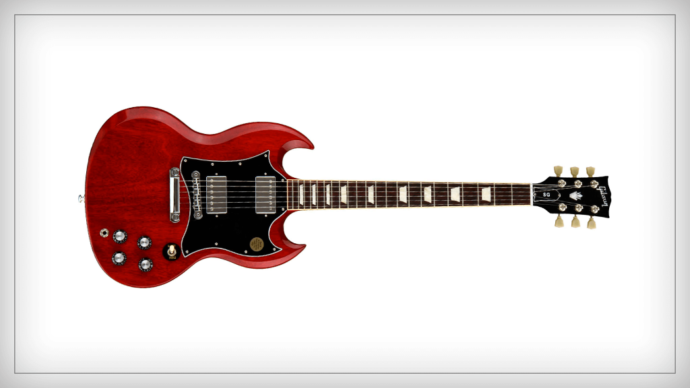
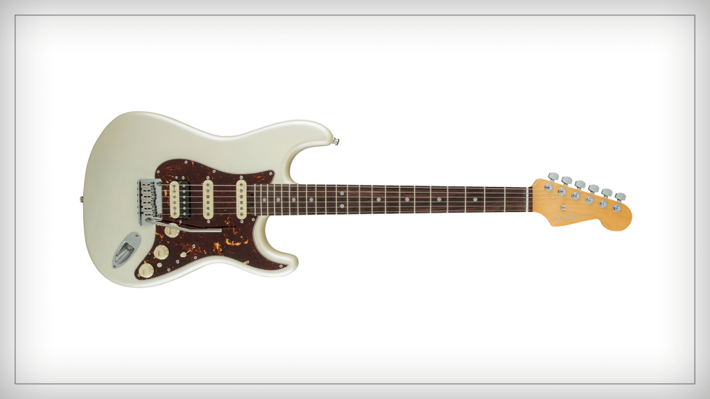
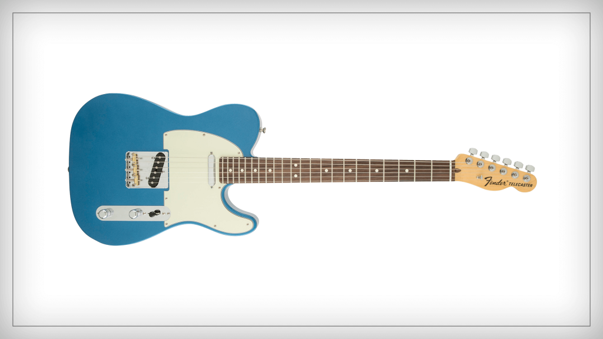
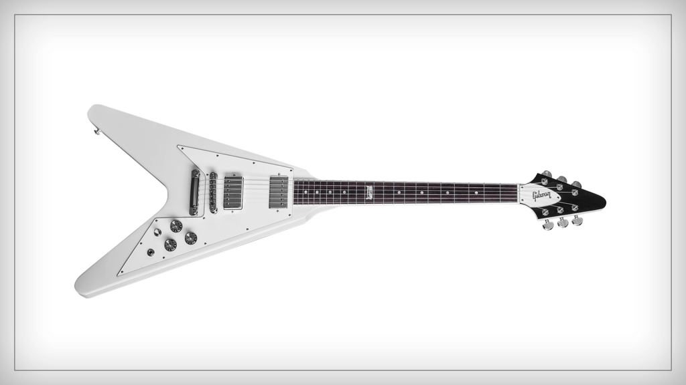
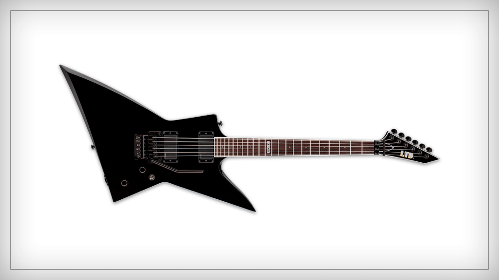

Guitarra Strinberg Series Les Paul
Profissional Lps 230 Cherry Burst Fosco Lps
Esse é um dos tipos de guitarra mais conhecidos de todos os tempos.
Também fabricada em série a partir do início dos anos 1950, o modelo Les Paul é o carro chefe da Gibson.

SG
Em meados dos anos 1960, a Gibson começou a notar uma queda nas vendas do modelo Les Paul. Algumas críticas assolavam o famoso modelo da marca.
Entre elas, vale destacar o peso do instrumento e a dificuldade de tocar usando as casas dos últimos trastes.
Com isso, a empresa lançou a Les Paul SG, que mais tarde passou a se chamar apenas SG.

Stratocaster
Quando falamos em tipos de guitarra, esse é provavelmente o mais famoso. Talvez essa frase seja um pouco exagerada,
afinal, não dá para saber com certeza qual o instrumento mais popular do planeta, mas com certeza a Stratocaster é
uma das primeiras opções de muitos guitarristas.

Telecaster
Entre todos os tipos de guitarra, a Telecaster tem um lugar especial. Apesar de não ser o mais famoso,
esse é o modelo que pode ser considerado a origem das guitarras de corpo sólido.
Desenvolvido originalmente pela Fender, no início dos anos 1950, o instrumento foi inicialmente chamado de Broadcaster.

Flying V
Esse é um dos tipos de guitarra que foram imortalizados por lendas.
Apesar de não ser um modelo amplamente usado, ele tem um lugar especial guardado nos corações de muitos guitarristas de rock n’roll.
O projeto da Flying V surgiu em 1957 com uma ideia da Gibson: criar instrumentos com design mais futurista.

Explorer
Outra guitarra produzida pela Gibson no intuito de chegar a modelos mais futuristas é a Explorer.
Ela foi lançada junto com a Flying V, no final da década de 1950.
